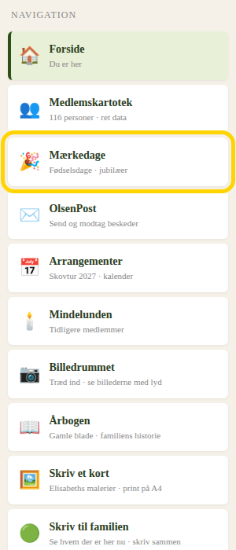
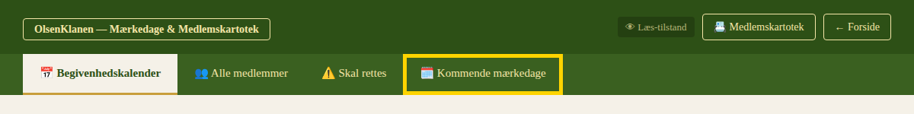
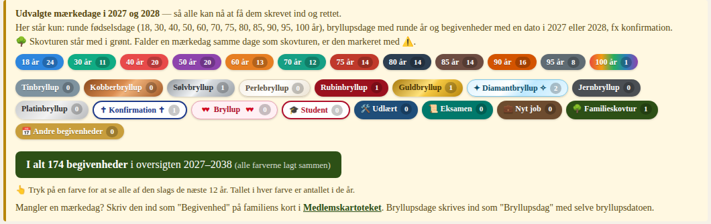
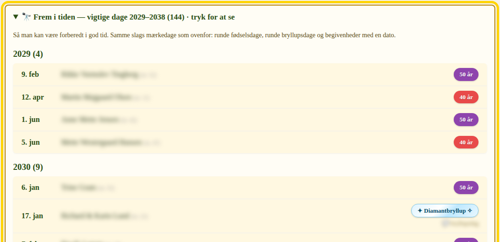
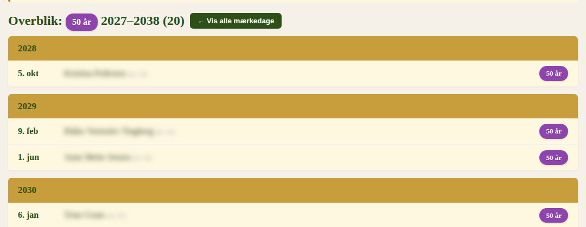

På olsenklanen.dk kan du se familiens kommende mærkedage helt frem til 2038: runde fødselsdage, bryllupsdage, konfirmationer, studenter, svendeprøver, nye job – og familieskovturen.
Listen laves ud fra det, der står i Medlemskartoteket. Kig efter din egen familie, og skriv det ind, der mangler.
Sådan ser du overblikket
1Log ind på olsenklanen.dk. Tryk på Mærkedage i menuen.

2Tryk på fanen Kommende mærkedage.

3Nu ser du de to næste år, måned for måned. Øverst står en række farver – én for hver slags mærkedag. Tallet i farven viser, hvor mange der er frem til 2038. Den grønne boks viser alle lagt sammen.

4Vil du se længere frem? Rul ned til boksen 🔭 Frem i tiden, og tryk på den. Så ser du årene efter.

5Du kan også trykke på en farve – fx 50 år. Så ser du alle, der fylder 50, frem til 2038. Tryk på ← Vis alle mærkedage for at komme tilbage.

Find det, der mangler
Kig efter din egen familie på listen, og spørg:
- Står vores runde fødselsdage der – med den rigtige dato?
- Står vores sølv-, guld- eller diamantbryllup der? Hvis ikke, mangler bryllupsdagen.
- Står børnenes og børnebørnenes konfirmation der?
- Er der en student, en svendeprøve, en afsluttende eksamen eller et nyt job på vej?
Sådan skriver du det ind
- Gå ind i Medlemskartoteket, og find din familie.
- Tryk på ✏️ Rediger.
- Ret fødselsdatoer, hvis de er forkerte.
- Tryk på ➕ Begivenhed, og vælg fx Bryllupsdag, Konfirmation, Student, Udlært, Afsluttende eksamen eller Nyt job. Skriv navn og dato.
- Tryk på 💾 Gem rettelse – og til sidst på ✓ Godkend medlemsdata.
💡 Skriv bryllupsdagen med selve datoen for brylluppet. Så regner siden selv kobber-, sølv-, guld- og diamantbryllup ud.